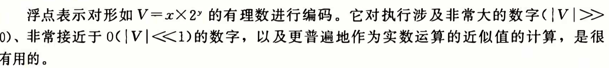
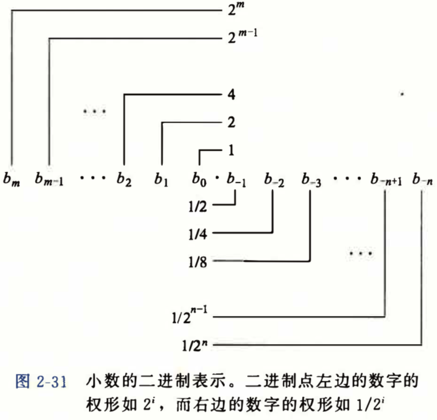
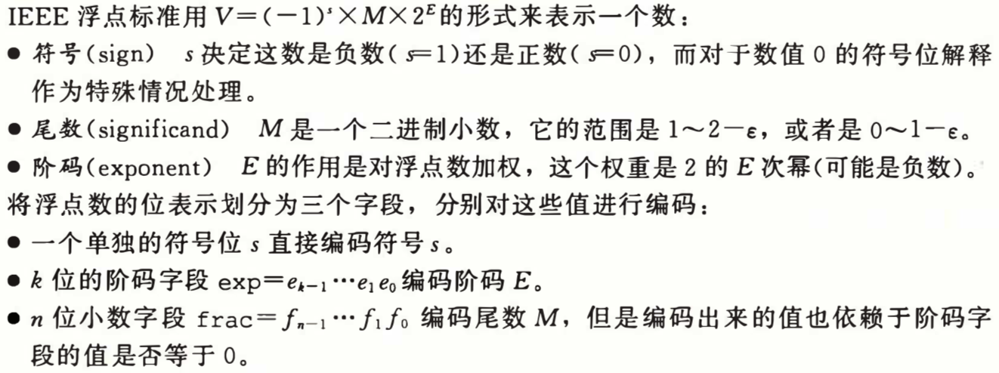
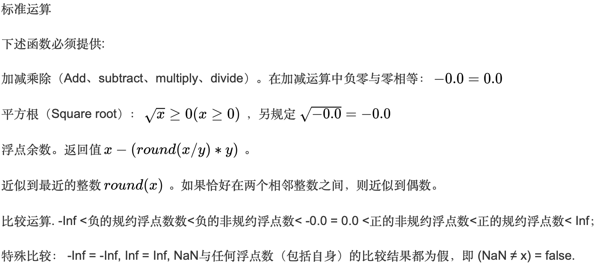
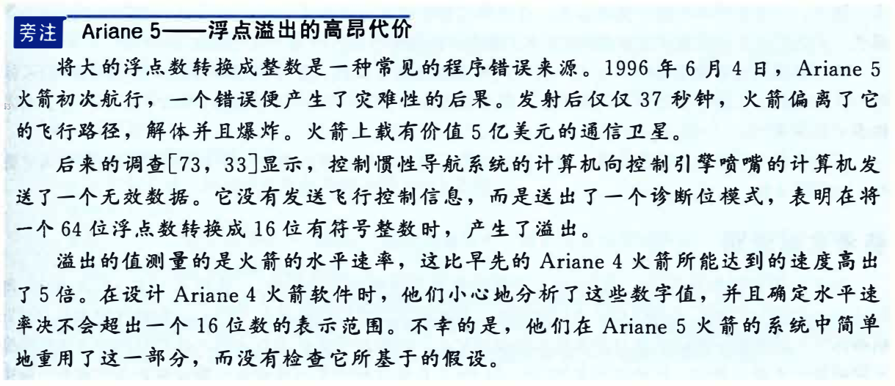

定义

二进制小数***

IEEE 浮点表示
IEEE 二进制浮点数算术标准（IEEE 754）是 20 世纪 80 年代以来最广泛使用的浮点数运算标准，为许多 CPU 与浮点运算器所采用。这个标准定义了表示浮点数的格式（包括负零-0）与反常值（denormal number）），一些特殊数值（无穷（Inf）与非数值（NaN）），以及这些数值的“浮点数运算符”；它也指明了四种数值舍入规则和五种例外状况（包括例外发生的时机与处理方式）。
IEEE 754 规定了四种表示浮点数值的方式：单精确度（32 位）、双精确度（64 位）、延伸单精确度（43 比特以上，很少使用）与延伸双精确度（79 比特以上，通常以 80 位实现）。只有 32 位模式有强制要求，其他都是选择性的。大部分编程语言都有提供 IEEE 浮点数格式与算术，但有些将其列为非必需的。例如，IEEE 754 问世之前就有的 C 语言，有包括 IEEE 算术，但不算作强制要求（C 语言的 float 通常是指 IEEE 单精确度，而 double 是指双精确度）。
该标准的全称为 IEEE 二进制浮点数算术标准（ANSI/IEEE Std 754-1985），又称 IEC 60559:1989，微处理器系统的二进制浮点数算术（本来的编号是 IEC 559:1989）。后来还有“与基数无关的浮点数”的“IEEE 854-1987 标准”，有规定基数为 2 跟 10 的状况。最新标准是“ISO/IEC/IEEE FDIS 60559:2010”。

舍入
任何有效数上的运算结果，通常都存放在较长的寄存器中，当结果被放回浮点格式时，必须将多出来的比特丢弃。 有多种方法可以用来运行舍入作业，实际上 IEEE 标准列出 4 种不同的方法：
舍入到最接近：舍入到最接近，在一样接近的情况下偶数优先（Ties To Even，这是默认的舍入方式）：会将结果舍入为最接近且可以表示的值，但是当存在两个数一样接近的时候，则取其中的偶数（在二进制中式以 0 结尾的）。
朝+∞ 方向舍入：会将结果朝正无限大的方向舍入。
朝-∞ 方向舍入：会将结果朝负无限大的方向舍入。
朝 0 方向舍入：会将结果朝 0 的方向舍入。
运算

